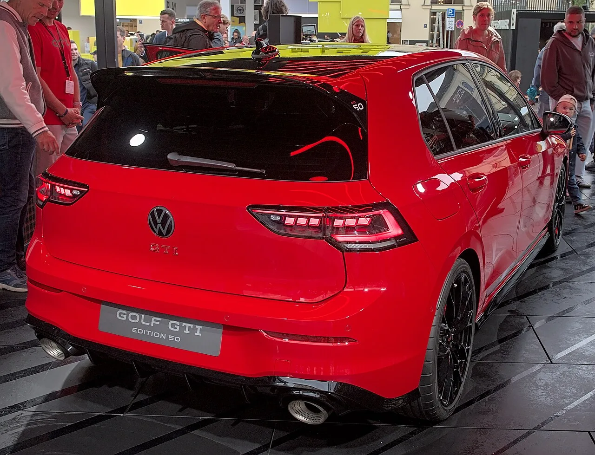

▲ 폭스바겐 골프 GTI. 1976년 글로벌 출시 50주년, 2006년 국내 출시 20주년을 맞아 블랙 에디션이 나왔다 ⓒ Alexander Migl, Wikimedia Commons (CC BY-SA 4.0)
검은 차체에 빨간 허니콤 데칼 하나 더했을 뿐인데, 이 차엔 20년치 사연이 담겨 있다.
폭스바겐코리아가 9월 14일 '골프 GTI 블랙 에디션'을 공개했다. 표면적으로는 색상 한정판이지만, 의미는 그 이상이다. 1976년 첫 GTI가 나온 지 글로벌 50주년, 그리고 2006년 국내에 GTI가 처음 상륙한 지 20주년이 되는 해에 맞춘 헌정 모델이기 때문이다. 가격은 5,275만원, 9월 16일부터 전국 전시장에서 판매된다.
1. '블랙 에디션'이란 무엇인가
이름 그대로 검은 차체가 핵심이다. 폭스바겐코리아에 따르면 블랙 에디션은 기존 골프 GTI에 블랙 컬러 차체와 GTI 시그니처 레드 컬러를 조합한 전용 허니콤 패턴 사이드 데칼을 더한 것이 가장 큰 특징이다. 레드와 블랙의 대비를 통해 GTI 특유의 스포티한 이미지를 한층 강조했다는 설명이다.
다만 현재까지 공개된 보도자료 기준으로 엔진·서스펜션 등 기계적 사양이 별도로 달라졌다는 언급은 없다. 즉 파워트레인은 일반 8세대 골프 GTI와 동일하며, 외장 데칼과 한정 혜택으로 차별화한 '스페셜 컬러 패키지' 성격에 가깝다.
📍 몇 대나 나올까
블랙 에디션 자체의 전체 생산·판매 대수는 이번 발표에서 별도로 공개되지 않았다. 다만 구매 사은품인 'GTI 컬렉션 스포츠 백'은 선착순 50명으로 한정된다고 명시됐다. 차량 자체가 몇 대까지 판매되는지는 폭스바겐코리아 전시장을 통해 별도로 확인이 필요하다.

▲ GTI 후면부. 국내 블랙 에디션은 차체 컬러와 사이드 데칼로 차별화한 한정 사양이다 ⓒ Alexander Migl, Wikimedia Commons (CC BY-SA 4.0)
2. 가격 5,275만원, 어떤 혜택이 붙나
권장소비자가격은 5,275만원. 여기에 20주년을 기념한 여러 구매 혜택이 함께 붙는다.
| 구분 | 내용 |
|---|---|
| 한정 굿즈 | 선착순 50명 'GTI 컬렉션 스포츠 백' 증정 |
| 서비스 패키지 | 200만원 상당, 5년간 엔진오일·오일필터·에어컨필터·점화플러그·브레이크 패드·브레이크 오일·와이퍼 블레이드 무상 제공 |
| 보증 연장 | 5년/15만km 무상 보증 연장 |
| 사고 지원 | 첫해 1회, 사고 자기부담금 50만원 지원 |
| 금융 혜택 ① | 48개월 무이자, 선수금 43.2% 납입 후 월 62만 4,460원 |
| 금융 혜택 ② | 60개월 저리(연 1.94%), 선수금 30% 납입 후 월 64만 6,290원 |
| 이벤트 초청 | 10월 17일 용인에서 열리는 '2026 폭스바겐 골프 트레펜' 초청 |
구체적인 트림별 가격과 옵션 구성은 폭스바겐코리아 공식 홈페이지에서 확인 가능하다. 폭스바겐코리아 골프 GTI 페이지 바로가기
3. 2006년부터 20년, 국내 GTI는 이렇게 컸다
골프 GTI가 한국에 처음 들어온 건 2006년, 5세대(Mk5) 모델이었다. 당시 '서민들의 포르쉐'라는 별명으로 불리며 세단 중심이던 국내 시장에 고성능 해치백이라는 장르를 정착시킨 차로 꼽힌다. 이후 20년간 세대를 거듭하며 가격도 꾸준히 올랐다.
| 세대 | 국내 출시 | 당시 가격 |
|---|---|---|
| 5세대(Mk5) | 2006년 | 국내 최초 GTI 출시 |
| 6세대(Mk6) | 2009~2013년 | 4,390만원 |
| 7세대(Mk7) | 2013~2017년 | 4,350만원 |
| 8세대(Mk8) | 2022년 12월 15일 판매 개시(11월 16일 공개) | 4,509만원 |
| 8세대 블랙 에디션 | 2026년 9월 16일 | 5,275만원 |
20년 사이 가격은 오르고 세대는 바뀌었지만 콤팩트한 해치백 차체에 고성능 엔진을 얹는다는 GTI의 기본 공식은 변하지 않았다. 업계에서는 이 모델을 폭스바겐이 내세우는 '모두를 위한 엔지니어링' 철학을 가장 직관적으로 보여주는 전략 모델로 평가한다. 소수만 누리던 고성능차 경험을 대중적인 해치백 가격대로 끌어내렸다는 의미에서다.

▲ 국내에 정식 수입됐던 6세대(Mk6) 골프 GTI. 빨간 그릴 라인은 1976년 초대 GTI부터 이어온 상징이다 ⓒ Damian B Oh, Wikimedia Commons (CC BY-SA 4.0)
4. 핫해치의 원조, 1976년으로 거슬러 올라가면
GTI라는 이름 자체가 '핫해치'라는 장르의 시작점이다. 1976년 독일에서 처음 등장한 골프 GTI는 작고 실용적인 해치백에 스포츠카에 버금가는 엔진을 얹는다는, 당시로서는 파격적인 발상에서 출발했다. 이 공식이 이후 수십 년간 수많은 경쟁 모델의 기준점이 됐다.
✅ 왜 지금 '블랙'인가
· 2026년은 GTI 글로벌 출시 50주년이자 국내 출시 20주년이 겹치는 해다
· 블랙 에디션은 신차급 변화가 아니라, 두 기념일을 함께 기리는 한정 컬러·혜택 패키지 성격이 강하다
· GTI 상징인 레드 그릴 라인의 색 대비를 블랙 바디 위에서 극대화한 구성이다
5. 현재 판매 중인 골프 GTI 제원
블랙 에디션은 파워트레인이 별도로 공개되지 않아, 현재 국내 판매 중인 8세대 골프 GTI 공통 제원을 기준으로 정리했다.
| 항목 | 내용 |
|---|---|
| 엔진 | EA888 evo4, 2.0L 직렬 4기통 가솔린 터보(TSI) |
| 최고출력 | 245마력 |
| 최대토크 | 37.7kg·m (1,750~4,300rpm) |
| 변속기 | 7단 DSG(습식 듀얼클러치) |
| 구동방식 | 전륜구동(FF) |
| 복합연비 | 10.8km/L (도심 9.3km/L / 고속 13.4km/L) |
1,750rpm이라는 낮은 회전수부터 최대토크가 나오기 때문에 일상 주행에서도 답답함 없이 힘이 붙는 것이 GTI 특유의 성격으로 꼽힌다. 여기에 7단 DSG가 물려 있어 직결감 있는 가속이 특징이다.
▲ 골프 GTI 실내. 스티어링 휠과 변속 레버에 들어간 레드 스티칭이 GTI 특유의 포인트다 ⓒ deathpallie325, Wikimedia Commons (CC BY-SA 4.0)
6. 요약
폭스바겐코리아가 골프 GTI 글로벌 출시 50주년과 국내 출시 20주년을 기념해 '골프 GTI 블랙 에디션'을 5,275만원에 선보였다. 블랙 바디에 GTI 시그니처 레드 컬러의 허니콤 패턴 사이드 데칼을 더한 것이 핵심 디자인 변화이며, 9월 16일부터 전국 전시장에서 판매된다.
2006년 5세대로 국내에 처음 상륙한 GTI는 6세대(4,390만원)·7세대(4,350만원)를 거쳐 2022년 8세대(4,509만원)에 이르기까지 20년간 꾸준히 팔려왔다. 엔진·변속기 등 파워트레인은 245마력 2.0 TSI, 7단 DSG로 기존 8세대와 동일하며, 사은품인 GTI 컬렉션 스포츠 백은 선착순 50명으로 한정된다.
1976년 핫해치라는 장르를 만든 원조 모델이라는 상징성과, 200만원 상당 서비스 패키지·5년 보증 연장 같은 실질 혜택이 함께 묶인 한정판이라는 점에서, 20년째 국내 팬층을 지켜온 GTI에 대한 헌정 성격이 강한 모델이다.